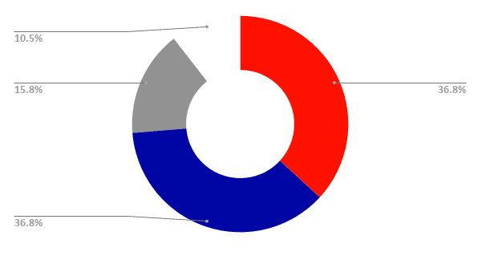
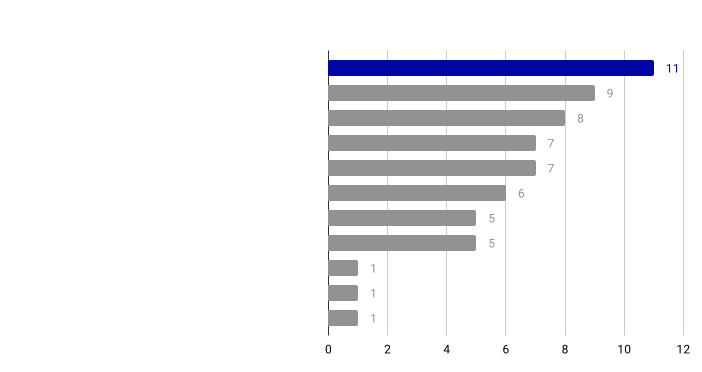
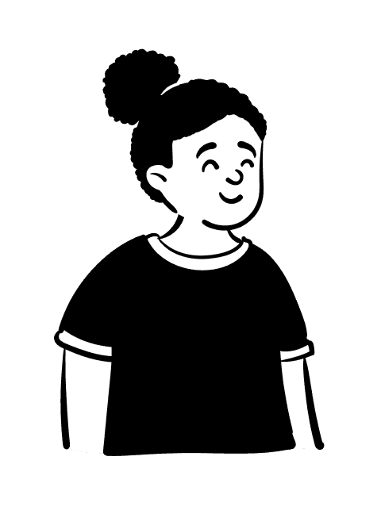
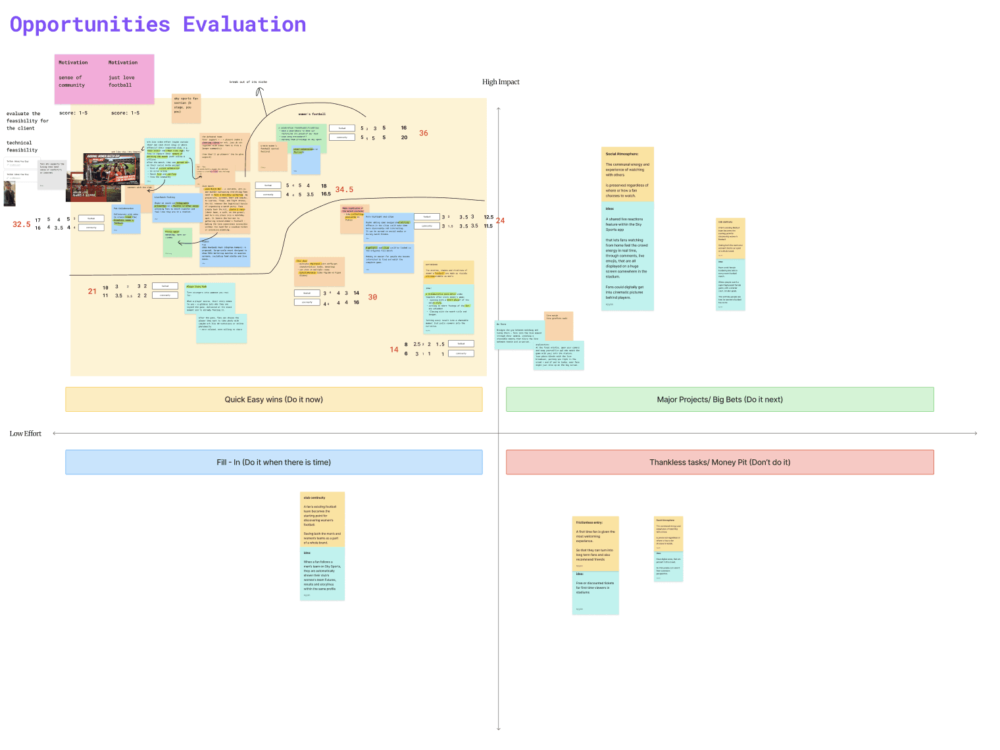
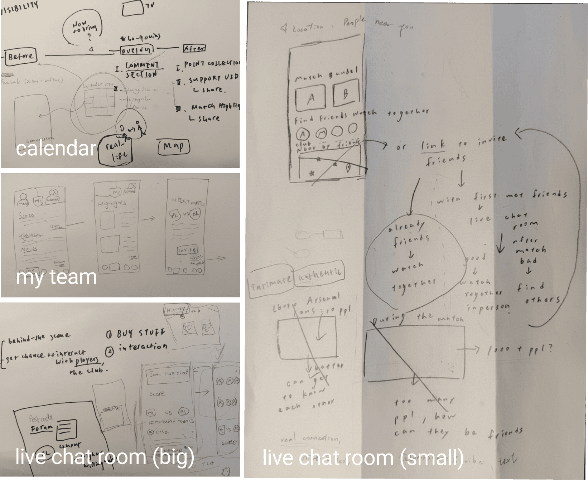
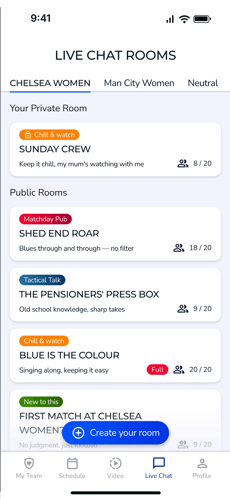
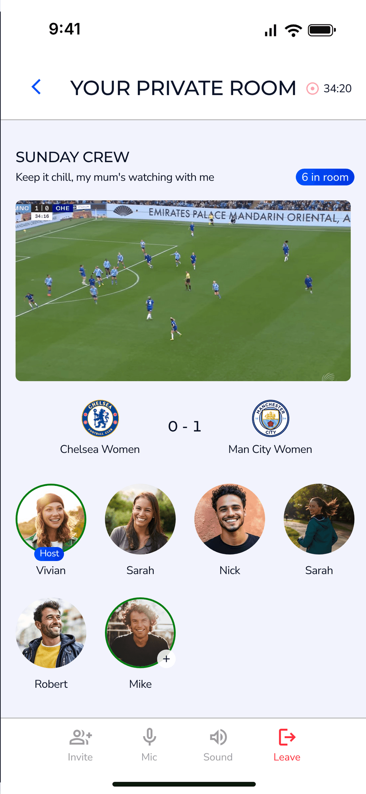
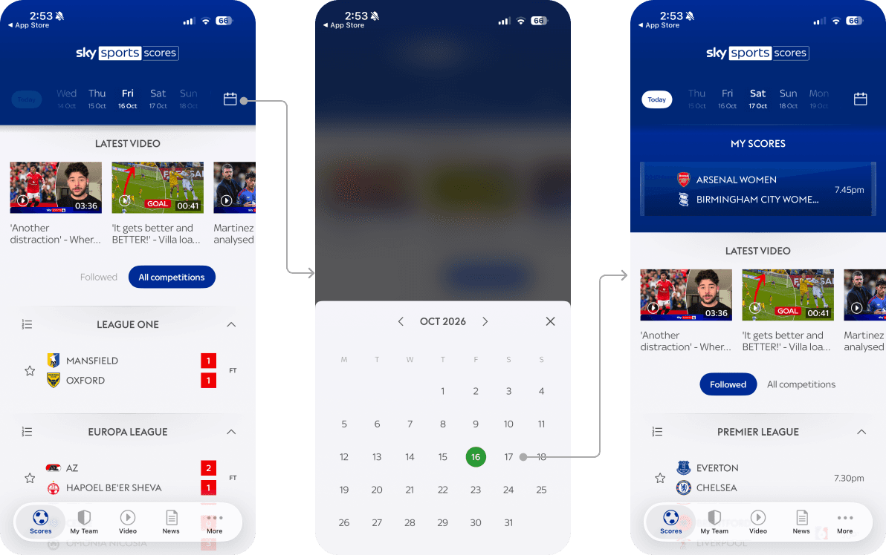
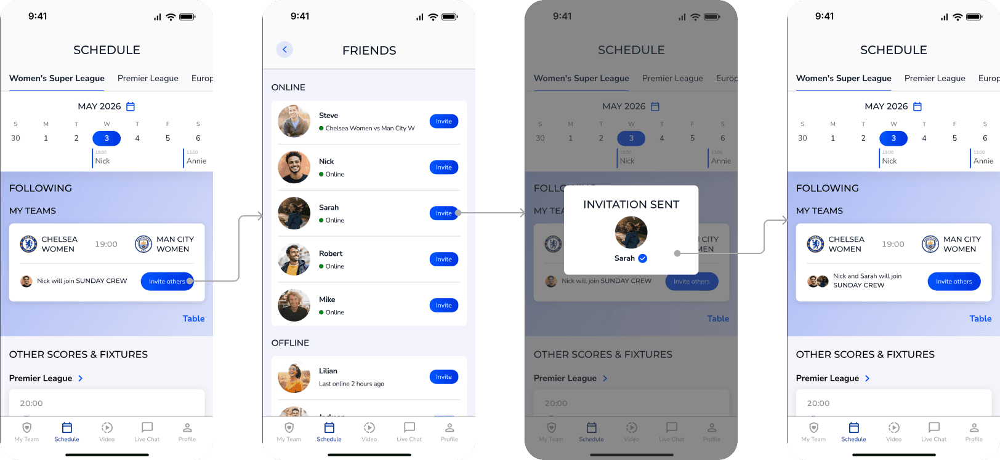

Sky Sports is Europe’s leading sports broadcaster, but its coverage and fan experiences have mostly been built around men’s competitions, so women’s sport is often less visible. Many people tune in for major events, but fewer follow women’s sport across a season.
This project aimed to help fans build social circles around women’s football, so following it becomes an everyday habit. The long-term goal was to make women’s sport more visible overall.
In a team of five, I led the research, interviews and concept testing, presented our work to Sky Sports, and designed the live chat room.
Role
Project manager, UX researcher & UI designer
What I did
UX research, data analysis, concept testing, hi-fi prototyping
Women's football fans tuned in for big tournaments, but didn't stay
Women's sport has grown rapidly in visibility and participation in recent years, and many fans watch major women's tournaments. However, they struggle to build deeper connections with teams, leagues or athletes, which limits long-term engagement.
To address this, we narrowed our focus to women’s football. England’s wins at the UEFA Women’s EURO in 2022 and 2025 brought women’s football a lot of attention, but this attention didn't last after the tournaments.
Through initial research, we identified two core challenges that prevent fans from consistently following women's football:
① Lack of an entry pointNew fans don't know where to start
② No long-term engagement pathEven interested fans struggle to stay connected across a season
Research
Fans were interested, but had no way in
We used 3 methods to understand how people follow women’s football. I led all 3, from planning to analysis.
Fans loved the community, but the games were hard to follow
Digital ethnography · 3 platforms
We observed women’s football communities on Reddit, TikTok and Instagram:
What fans love• Behind-the-scenes clips that show the real, authentic side of players • The welcoming, community-driven atmosphere around women's football
Pain points fans face when following the gameLow media coverage and fragmented broadcast channels make it hard to follow consistently
Watching football is social, but women's football is still on the outside
Interviews · 19 participants
We ran structured interviews with participants aged 20 to 35. Their watching habits fell into three groups:
Watch both men's and women's football
Watch men's, but only women's major tournaments
Don't watch football at all
2 key insights stood out:
Social gets people in the doorAlmost no one discovered women's football on their own. It was usually a friend, a partner, or a family member.
On weekdays I watch at home with my dad. Weekends, I go to the pub with friends. -P05
The interest is there, but the entry points aren'tPeople don't know when matches are on, or where to watch them. Discovery and access are both broken.
The coverage just isn't there. I never know where to watch, and none of my friends follow it either. -P06
Supporting the growth of women's sport was what drew people in
Survey · 19 responses
36.8%watched only during major tournaments

64.7%supporting the growth of women's sport

Wanting to support the growth of women’s sport also came up in our interviews:
A few years ago, I never would have imagined women's football getting to where it is today. It's genuinely moving to see how far it's come. -P18
Key Insights
Why fans drop off after major tournaments
Major tournaments are the primary driver. Fans tune in for the occasion, not out of routine.
What held them back:
Social isolation breaks engagementLack of support for discussing women's football in social circles
Live games turn people into fansLive experience is consistently cited as a turning point, but this isn't being scaled
A powerful vibe that no one marketsPeople enjoy the family-friendly atmosphere at women's football games
Persona
Meet Primary and Secondary Persona
Based on research data, we defined two personas to maintain user-centred perspective design solutions.

Primary Persona
A men’s football fan who enjoys women’s football more than she expected
SocialMan City fanOccasional viewer
Goals• Find friends to watch women’s football with, so getting into it feels more enjoyable and less lonely • Feel part of a communityPain Points• No one to talk about women’s football with • No standout element to keep her engagedMotivationSense of community
Secondary User
A men’s football fan who only watches women’s major tournaments
Loves footballParentBusy
Goals• Get women’s football news naturally • Feel the live match atmosphere even from homePain Points• Hard to notice women’s football news • No time to attend matches in personMotivationJust love football
swipe left and right
Design Goals
Make it easy to share, watch together, and keep following
Research showed that many men’s football fans also watched women’s football, but only during major tournaments. We saw an opportunity to bring them closer, which led to our HMW:
HMW help all football fans naturally discover and follow women's football?
We broke this into smaller questions, used a prioritisation matrix to focus on three, and turned each into a design principle:
DiscoverHMW make women's football content visible to all potential fans?↓Design PrincipleShareableSpread women's football organically across communities
ConnectHMW help fans watch matches together, even when they're not in the same place?↓Design PrincipleConnectedFoster shared excitement and a sense of belonging
FollowHMW make it easier for football fans who don't watch women's football to follow it?↓Design PrincipleEngagedSustain interest in women's football beyond a single match
Ideation
Exploring ways to bring fans together, in person and online
We came up with seven feature ideas, from real-life events to digital features, and narrowed them down as a team.

Feature brainstorming and evaluation
Testing
Fans wanted to know when to watch, and who to watch with
We ran a quick concept test with 2 participants using paper sketches. Their feedback matched what we heard in our earlier interviews.

Sketches used in user testing. I led the live chat room feature.
Through concept testing, we prioritised 3 features:
① Small live chat roomParticipants preferred a small chat room to a big one. “I prefer to enjoy the game with the people closest to me, like my family or friends.” - P01
② CalendarParticipants found it the most useful feature. “I literally forget the kick-off times sometimes... this also creates a sense of anticipation!” - P02
③ My Team pageParticipants were glad to see women’s football content given equal space to men’s.
From Research to Design Solutions
Final Design
Live Chat Room (Led by me)
Football is social. Live chat rooms let fans watch with their own people, even when they’re not in the same place.

Create a private room
Invite friends or family to a room of your own. In testing, both participants preferred watching with the people closest to them.
Join a public room
Chat with other fans during the match, even when no one in your own circle follows women’s football.
Pick a room by its vibe
Tags show what each room feels like before you join. For example, “New to this” gives first-time fans an easy way in.

Watch the match together
Stream the match and chat in one place. Fans you meet in a room can be added as friends for the next match.
Match Calendar
Never miss kick-off. See when your team plays and who’s watching, then invite friends to join.
Before
No way to tell which days have a match

After
Match days marked, with kick-off times and friends

My Team Page
Men’s and women’s football get equal space on My Team page, so fans of the men’s team can discover the women’s team naturally.
Before
Original home page: women’s football is hard to find
After
Redesigned My Team page: men’s and women’s games side by side
Outcome Evaluation
How I’d measure success
This was a master’s project with Sky Sports, so the features weren’t built. If they were launched, I’d track these metrics:
Feature
Metrics
Goal
Live Chat Room
Number of private rooms created, and how many users come back to watch another match
Connect
Match Calendar
Number of matches added to calendars, and how many of those matches users actually watch
Follow
My Team Page
Number of men’s football fans who visit the women’s team page, and how many of them go on to watch a women’s match
Discover
Reflection
What I learned…
Define the responsibilities and scope firstMore designers doesn’t always mean faster progress. Clear roles and regular check-ins help everyone focus on their own part and avoid repeated work.
AI speeds things up, but insights come from peopleAI helped us iterate on ideas and organise raw data much faster. But the real value came from talking to participants, where we found the insights that shaped solutions around our project goals.